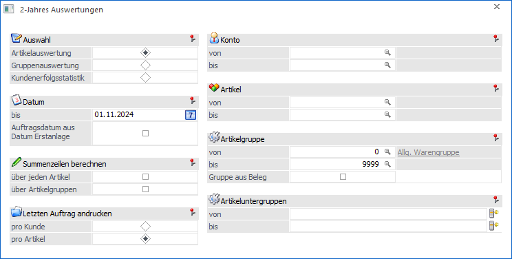
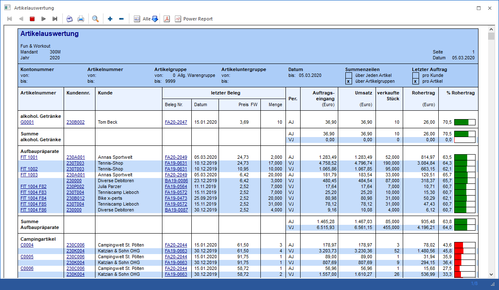
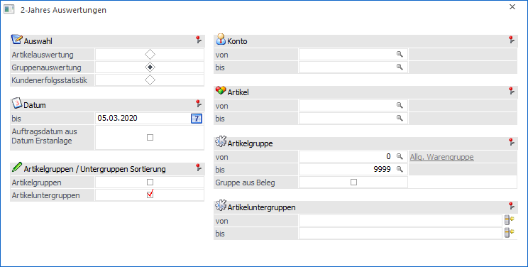
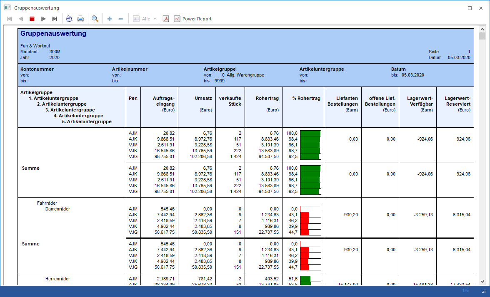
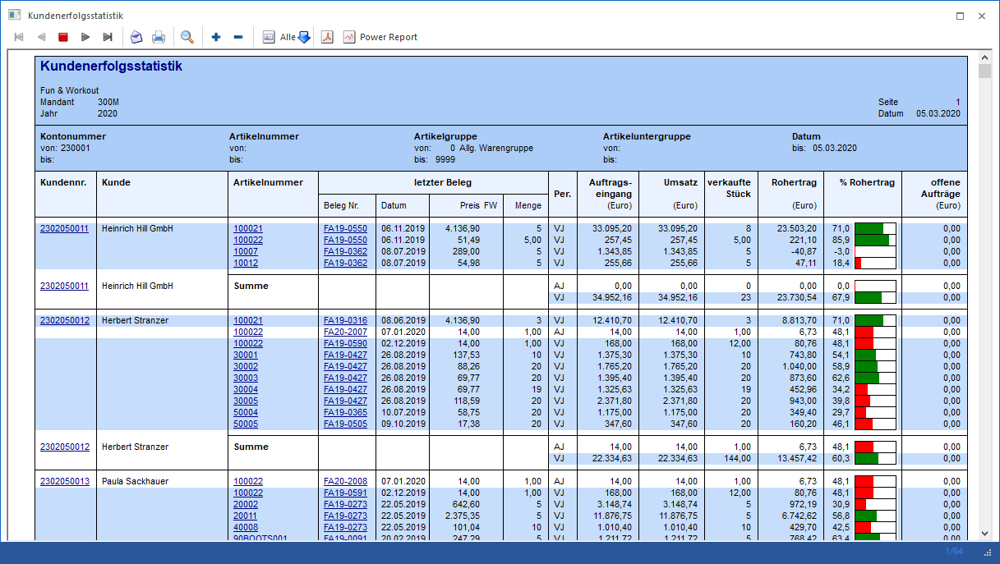

Die 2-Jahres Auswertung ist eine Auswertung aller verkauften Artikel im 2-Jahres Vergleich, welche über den Menüpunkt…
1 WinLine FAKT
1 Auswertungen
1 Statistik
1 2-Jahres Auswertungen
… aufgerufen wird.

Die Ausgabe kann durch folgende Kriterien eingeschränkt bzw. beeinflusst werden:
Ø Auswahl
Mit Hilfe des Radiobuttons kann ausgewählt werden, nach welchem Kriterium die Auswertung sortiert werden soll. Es stehen folgende Sortierkriterien zur Auswahl:
ü Artikelauswertung
Es soll von
allen Artikeln ausgewertet werden, welche Kunden den Artikel bisher gekauft
haben und wann sie diesen im Vorjahr bzw. im aktuellen Jahr zum letzten Mal
gekauft haben. Des Weiteren möchte man wissen, wie viel Stück insgesamt von
einem Kunden von einem Artikel im Vorjahr bzw. im aktuellen Jahr gekauft wurde
und wie viel Rohertrag aus den Verkäufen hervorgegangen ist.
Setzen Sie
den Radiobutton bei "Sortieren" auf "Artikelauswertung. Geben Sie unter "Datum"
den Stichtag an, bis zu welchem ausgewertet werden soll. Den Radiobutton bei
"Letzten Auftrag andrucken" setzen Sie auf "pro Kunden", da man wissen möchte
welche Kunden diesen Artikel gekauft haben und wann Sie dies zum letzten Mal
gemacht haben. Würde man den Radiobutton auf "pro Artikel" setzen, so würde nur
jener Kunde angezeigt werden, der den Artikel zuletzt gekauft hat. Um die
Auswertung aller Artikel und aller Kunden anzuzeigen, dürfen Sie keine weiteren
Einschränkungen durchführen. Um die Auswertung auszugeben, bestätigen Sie Ihre
Eingabe mittels Mausklick auf den Ausgabe Button oder drücken der F5
Taste.

ü Gruppenauswertung
Es soll eine
Auswertung über alle Aufträge pro Artikelgruppe und Untergruppe ausgegeben
werden. Man möchte wissen, wie viel Stück von den Artikelgruppen verkauft
wurden, und wie viel Rohertrag dadurch erwirtschaftet wurde. Des Weiteren möchte
man einen aktuellen Stand des Lagerwertes der verfügbaren Ware und den der
reservierten Ware. Die bisherigen Lieferantenbestellungen und die die noch
offenen sind, sollen ebenfalls ausgewertet werden. Zum Vergleich möchte man die
Werte des Monats des aktuellen Jahres und die des Vorjahres sowie die des
gesamten aktuellen Jahres kumuliert, die kumulierten Werte des Vorjahres und des
gesamten Vorjahres. Es sollen sowohl Summen der einzelnen Untergruppen, als auch
eine Gesamtsumme der Artikelgruppe angezeigt werden.
Setzen Sie den
Radiobutton bei "Sortieren" auf "Gruppenauswertung. Daraufhin ändert sich das
Fenster in folgende Ansicht:


ü Kundenerfolgsstatistik
Es soll
eine Auswertung ausgegeben werden, die alle Artikel auflistet, die ein Kunde in
den letzten 2 Jahren bestellt hat. Des Weiteren möchte man wissen, wann er
diesen Artikel zum letzten Mal und zu wie vielen Stück geordert hat. Auch die
Gesamtmenge des Artikels die abgenommen wurde und den sich daraus ergebenden
Rohertrag möchte man ausgewertet haben, genauso wie den Wert der noch offenen
Aufträge.
Setzen Sie den Radiobutton bei "Sortieren" auf
"Kundenerfolgsstatistik. Geben Sie unter "Datum" den Stichtag an, bis zu welchem
ausgewertet werden soll. Um die Auswertung aller Kunden anzuzeigen, dürfen Sie
keine weiteren Einschränkungen durchführen. Um die Auswertung auszugeben,
bestätigen Sie Ihre Eingabe mittels Mausklick auf den Ausgabe Button oder
drücken der F5 Taste.

Ø Datum
Eingabe des Datums, bis zu welchem Stichtag ausgewertet werden soll.
Ø Auftragsdatum aus Datum Erstanlage
Wird diese Option aktiviert, dann wird für die Auswertung das Systemdatum, an dem die Auftragsbestätigung erzeugt (erfasst) wurde, verwendet. Beleibt die Option inaktiv, dann wird das Systemdatum verwendet, an dem der Beleg zuletzt verändert wurde.
Ø Summenzeilen berechnen
Hier kann gesteuert werden, ob für jeden Artikel und/oder für jede Artikelgruppe eine Summe gebildet werden soll. Diese Option steht nur bei der "Artikelauswertung" zur Verfügung.
Ø Letzten Auftrag andrucken
Mittels Radiobutton kann eingestellt werden, ob der letzte Auftrag pro Kunde oder pro Artikel ausgegeben werden soll. Diese Option steht nur bei der "Artikelauswertung" zur Verfügung.
Ø Artikelgruppen / Untergruppen Sortierung
Hier kann gesteuert werden, ob für jeden Artikelgruppe und/oder für jede Artikeluntergruppe eine Summe gebildet werden soll. Diese Option steht nur bei der "Gruppenauswertung" zur Verfügung.
Ø Kontonummer
In den Feldern von - bis kann eine Einschränkung der Konten vorgenommen werden, die ausgewertet werden sollen.
Ø Artikelnummer
In den Feldern von - bis kann eine Einschränkung der Artikel vorgenommen werden, die ausgewertet werden sollen.
Hinweis
Wird im Feld "Artikelnummer von / bis" z.B. nur eine Artikelnummer eingegeben und dieser Artikel hat auch noch Ausprägungen, so werden alle Ausprägungen automatisch mit angedruckt. Nur wenn während des Anklickens des "Ausgabe-Buttons" die STRG-Taste gedrückt wird, wird nur der Hauptartikel alleine ausgewertet.
Ø Artikelgruppe
In den Feldern von - bis kann eine Einschränkung der Artikelgruppen vorgenommen werden, die ausgewertet werden sollen.
Ø Artikeluntergruppe
In den Feldern von - bis kann eine Einschränkung der Artikeluntergruppen vorgenommen werden, die ausgewertet werden sollen.
Buttons

Ø Ausgabe Bildschirm
Mit Hilfe des Buttons "Ausgabe Bildschirm" oder der Taste F5 wird die Auswertung am Bildschirm ausgegeben.
Ø Ausgabe Drucker
Durch Anwahl des Buttons "Ausgabe Drucker" wird die Auswertung am Drucker ausgegeben.
Ø Ende
Durch Anwahl des Buttons "Ende" bzw. der Taste ESC wird der Menüpunkt geschlossen
Ø Voreinstellung speichern
Durch Anwahl dieses Buttons erfolgt eine benutzerspezifische Speicherung aller im Fenster getätigten Einstellungen. Diese sogenannten "Voreinstellungen" können jederzeit wieder abgerufen werden und ermöglichen dadurch ein schnelleres und zielorientierteres Arbeiten (nähere Informationen entnehmen Sie bitte dem Kapitel "Die Voreinstellungen").